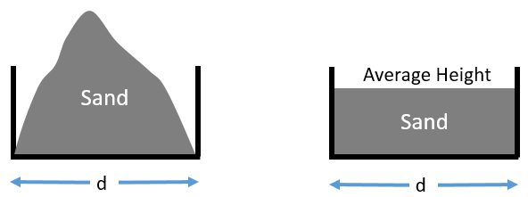
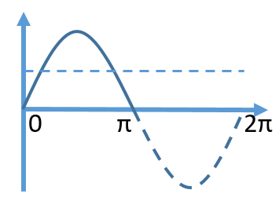
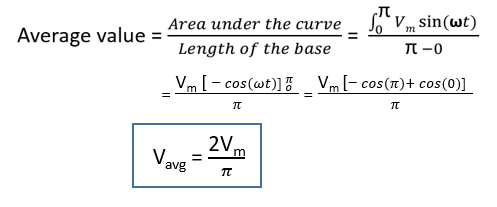

HOME BLOG EBOOKS ABOUT CONTACT SHOP
Average value is a pretty common and useful concept in technical fields, yet its meaning is often misunderstood. Imagine sand piled up in the form of a mountain over a certain distance, then the average value is that height obtained if the same distance is maintained while the sand is leveled off.

From observation itself, it is pretty clear that the average value of the sine waveform over a full cycle is zero. So for symmetrical waveforms such as the sine waveform, the average value is calculated over a half cycle rather than the full cycle.

